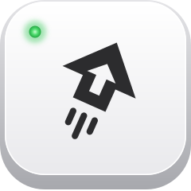

Apps
Caps + S and your terminal is just there. Not running? It starts. Hiding with no window? It opens one. No more fishing in the Dock.

CapsJump GitHubIt spent decades waiting for someone to SHOUT. Now hold it and press a key: your terminal is just there, GitHub opens in your work Chrome account, the window snaps to half the screen. One small file says which key does what.
brew install --cask whysosuresh/tap/capsjump
Free and open source, for macOS 13 or later.
Hold Caps Lock, then:
Caps + S and your terminal is just there. Not running? It starts. Hiding with no window? It opens one. No more fishing in the Dock.
Caps + G lands on the GitHub tab in your work account. Not your personal one. Never your personal one. No tab yet? It opens one in the right place.
Caps + an arrow sends the front window to that half of the screen: ← → ↑ ↓. Caps + F and it goes big. Rather other keys? Press the one you want, or turn any off.
Caps + W drops you into a Slack channel, a Zoom room or any web page, in the app that owns the link. Bookmarks, but with legs.
Rather click than write YAML? Pick Edit Config… in the menu bar and every key and site is right there.


Each key does one thing, and the window above saves straight to this file, checked by the same rules as you type. Prefer a text editor? Open Config File, and the file looks like this:
sites:
- name: github
account: you@work.com
open: https://github.com/your-org/your-repo/pulls
keys:
s: {app: iTerm}
t: {app: Finder}
g: {site: github}
left: {window: left-half}
right: {window: right-half}
up: {window: top-half}
down: {window: bottom-half}
f: {window: maximize}
w: {url: 'slack://channel?team=T123&id=C456'}Key names: a–z, 0–9, f1–f12 and the arrows. A file with no keys: leaves Caps Lock as it is.
brew install --cask whysosuresh/tap/capsjump
open -a CapsJumpCapsJump opens a short Welcome window, three steps that tick themselves as you go:
Chrome accounts and notifications are there too, each asked only when you click it, and a switch for starting at login, on until you turn it off. Close the window whenever you like: CapsJump's mark in the menu bar carries a small dot until it's set up, and its menu starts with Finish Setting Up…. From a terminal, capsjump setup opens the same window and capsjump init writes the starter ~/.capsjump.yaml.